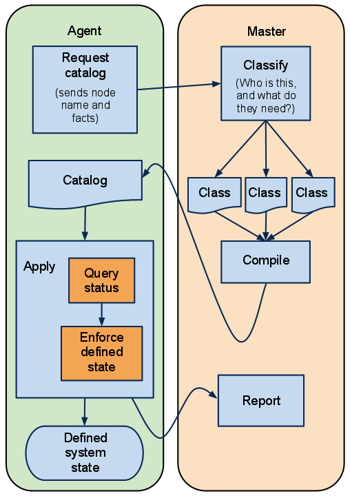

このガイドは前章のチュートリアルに沿ったVMの準備が完了しており、また新しいagentノードのVMと、オリジナルのmasterノードのVMがネットワーク上で疎通している事を前提としています。両方のVMを動作させて、rootでログインしておいてください。
Puppetのagent/masterモードはプル型での動作をベースとしています。agentノードはmasterノードから定期的にカタログを取得し、適用するように設定されています。またmasterノードは送付するカタログをコントロールしています（けれども、この先の演習ではしばらく手動で動作させます）。
この図を最初のほうでご覧になっているでしょう。この図はどのようにPuppetがマニフェストをコンパイルし適用するかの流れです：
Puppetをagent/masterモードで動作させた時も同じ流れになります。一番大きな違いはマニフェストとそのコンパイルはmasterノード側で実行される事です。agentノードは最後までマニフェストファイルを見る必要はありませんし、自身の設定情報以外のカタログにアクセスする事はありません。

puppet agentコマンドはmasterノードから設定情報を取得します。これは２つのモードがあります：
ここで使うのは何が起きているのかが見える２つ目のモードです。agentプログラムをデーモン化したまま何が起きているのか詳細な情報を出力したい場合は--testオプションを利用します。
もしagentサブコマンドを--testオプション無しで実行してしまうと、デーモンとしてバックグラウンドで動作します。それではagentプログラムがバックグラウンドで動作しているか確認するため、以下を実行してください：
# /etc/init.d/pe-puppet status
agentサービスを停止させるためには以下を実行してください：
# /etc/init.d/pe-puppet stop
動かす時がきました! agent VM上 でpuppet agent初めての起動です：
[root@agent1 ~]# puppet agent --test
info: Creating a new SSL key for agent1.localdomain
warning: peer certificate won't be verified in this SSL session
info: Caching certificate for ca
warning: peer certificate won't be verified in this SSL session
warning: peer certificate won't be verified in this SSL session
info: Creating a new SSL certificate request for agent1.localdomain
info: Certificate Request fingerprint (md5): FD:E7:41:C9:2C:B7:5C:27:11:0C:8F:9C:1D:F6:F9:46
warning: peer certificate won't be verified in this SSL session
warning: peer certificate won't be verified in this SSL session
warning: peer certificate won't be verified in this SSL session
Exiting; no certificate found and waitforcert is disabled
何かおかしいですね。
agentノードはmasterノードを見つけましたが、証明書をブロックされてしまいました。これは設定情報を取得するための認証ができてないため、masterノードに拒否されてしまったのです。
先述のレスポンスが表示されないようにすることは可能です。原因がいくつかあります。前章でagent VMの作成手順を読み返し、何かミスしてないか確認しましょう。確認すべき典型的なミスは以下の通りです：
/etc/puppetlabs/puppet/puppet.confファイルのサーバ設定（[agent]ブロックにあります）がpuppetもしくはlearn.localdomainになっていることそれでは認証してみましょう。masterノードVM上で保留中の証明書リクエストのリストをpuppet cert listコマンドを使って見てみます（コマンドの詳細は後程）。
[root@learn ~]# puppet cert list
agent1.localdomain (FD:E7:41:C9:2C:B7:5C:27:11:0C:8F:9C:1D:F6:F9:46)
agentノードがありますね。またリクエストのフィンガープリントも一致しています。このノードはagentノードであるのは確かなので、先に進みましょう。この証明書に対して puppet cert signコマンドで署名します：
[root@learn ~]# puppet cert sign agent1.localdomain
notice: Signed certificate request for agent1.localdomain
notice: Removing file Puppet::SSL::CertificateRequest agent1.localdomain at '/etc/puppetlabs/puppet/ssl/ca/requests/agent1.localdomain.pem'
これで証明書は認証されましたので、agentノードVMに戻ってからpuppet agentコマンドを再度実行してみましょう：
[root@agent1 ~]# puppet agent --test
warning: peer certificate won't be verified in this SSL session
info: Caching certificate for agent1.localdomain
info: Retrieving plugin
info: Caching certificate_revocation_list for ca
info: Loading facts in facter_dot_d
info: Loading facts in facter_dot_d
info: Loading facts in facter_dot_d
info: Loading facts in facter_dot_d
info: Caching catalog for agent1.localdomain
info: Applying configuration version '1326210629'
notice: Finished catalog run in 0.11 seconds
動きました。Puppet実行は成功しましたが、まだ何も適用すべきものはありませんでした。
PuppetはSSL証明書を利用してagentノードとmasterノード間の通信を保護しています。agentノードは証明書無しでは全てを実行する事はできないため、agentノードは問合せを行い、リクエストが承認まで待たねばなりません。
SSLの詳細については後述します。
agentノードに何か実行させてみたくありませんか?既に便利なクラスをいくつか作成済みであり、これらはmasterノードで実行可能です。（もしまだ古いVMからモジュールをコピーしていないのでしたら、/etc/puppetlabs/puppet/modulesディレクトリにありますのでしてください）。
でもどうやってagentノードのカタログにするクラスを指定すればよいのでしょう?
puppet applyコマンドを実行したときは、そのファイル中に適用したいクラスやリソースを全て宣言したマニフェストファイルを指定しました。
masterノードも同様であり、常に同じマニフェストファイルを読み込むような場合を除き、通常はsite.ppを参照します。Puppet Enterpriseではデフォルトで/etc/puppetlabs/puppet/manifests/site.ppに配置されていますが、manifestの設定(英文)で場所を変更できます。
指定したディレクトリのsite.pp中にクラスやリソースを宣言する事もできますが、全てのノードが同じリソースを取得するカタログを作ってしまいますので、これは限定的な利用方法です。通常はnode定義で宣言したいクラスを隠します。
ノード定義はクラス定義とほとんど同じです：
# Append this at the bottom of /etc/puppetlabs/puppet/manifests/site.pp
node 'agent1.localdomain' {
# Note the quotes around the name! Node names can have characters that
# aren't legal for class names, so you can't always use bare, unquoted
# strings like we do with classes.
# Any resource or class declaration can go inside here. For now:
include apache
class {'ntp':
servers => [ "ntp1.example.com dynamic", "ntp2.example.com dynamic", ],
}
}
ノードがクラスと異なるのは、ノードの場合はノードの名前を基準としてカタログがコンパイルされて自動的に宣言されるということです。ただ1つのノード定義がカタログに追加されるので、他のノード定義は効果的に隠されます。
agentノードの名前はほぼ毎回certnameの設定(英文)から読み込まれます。これはインストール時に設定されますが、後から変更もできます。certnameは通常ノード名のFQDN（でも絶対ではありません）になっています。
ノード定義の詳細は別の手段でクラスをノードに割り当てる方法と共に後述します。
それでは先ほど保存しましたagentノードVM名と一致したノード定義が入っているsite.ppで、puppet agentコマンドを再度実行してみましょう：
[root@agent1 ~]# puppet agent --test
info: Retrieving plugin
info: Loading facts in facter_dot_d
info: Loading facts in facter_dot_d
info: Loading facts in facter_dot_d
info: Loading facts in facter_dot_d
info: Caching catalog for agent1.localdomain
info: Applying configuration version '1326416535'
notice: /Stage[main]/Ntp/Package[ntp]/ensure: created
--- /etc/ntp.conf 2011-11-18 13:21:25.000000000 +0000
+++ /tmp/puppet-file20120113-5967-56l9xy-0 2012-01-13 01:02:23.000000000 +0000
@@ -14,6 +14,8 @@
# Use public servers from the pool.ntp.org project.
# Please consider joining the pool (http://www.pool.ntp.org/join.html).
+
+# Managed by puppet class { "ntp": servers => [ ... ] }
server 0.centos.pool.ntp.org
server 1.centos.pool.ntp.org
server 2.centos.pool.ntp.org
info: /Stage[main]/Ntp/File[ntp.conf]: Filebucketed /etc/ntp.conf to main with sum 5baec8bdbf90f877a05f88ba99e63685
notice: /Stage[main]/Ntp/File[ntp.conf]/content: content changed '{md5}5baec8bdbf90f877a05f88ba99e63685' to '{md5}35ea00fd40740faf3fd6d1708db6ad65'
notice: /Stage[main]/Apache/Package[apache]/ensure: created
notice: /Stage[main]/Apache/Service[apache]/ensure: ensure changed 'stopped' to 'running'
info: ntp.conf: Scheduling refresh of Service[ntp]
notice: /Stage[main]/Ntp/Service[ntp]: Triggered 'refresh' from 1 events
notice: Finished catalog run in 32.74 seconds
成功です!実際に何か設定を取得してきました。
もしsite.ppのノード定義を変更すると、次回のagentプログラム動作時に新しい設定を取得します（通常の環境では変更から30分以内）。
以下の内容を学習しました：
puppet agentコマンドを対話式で実行するには--testオプションを付けますしかし、いくつかの重要な内容で省略しているものがあります。将来的に、証明書とノードの分類についてさらに解説する予定です。